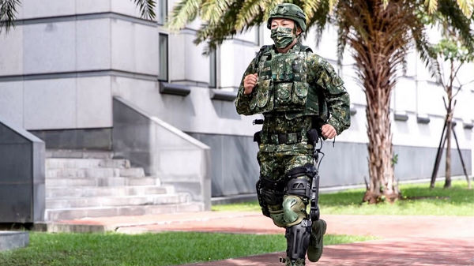
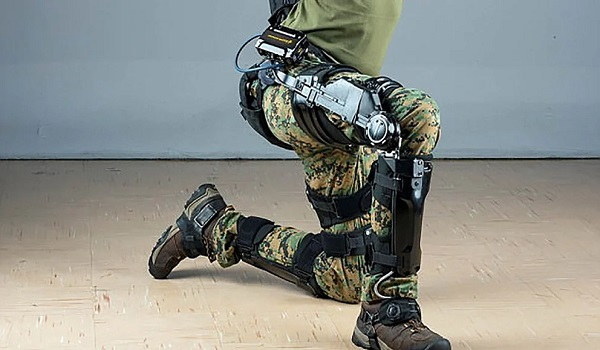

"Taiwán desarrolla un exoesqueleto para reducir la fatiga de los soldados y darles 'súper fuerza'"
Según las informaciones del diario The South China Morning Post, Taiwán ha creado un traje de exoesqueleto a batería que permite a los militares correr con más velocidad y transportar objetos pesados con facilidad. Este traje ha sido desarrollado por el Instituto Nacional de Ciencia y Tecnología de Chung-Shan y forma parte del proyecto Programa Ironman de Taiwán. El presupuesto para llevar a cabo este proyecto ha sido de 5,74 millones de dólares, además, el objetivo del traje es proporcionar a los soldados de Taiwán un exoesqueleto que se pueda colocar en la parte inferior del cuerpo para mejorar la resistencia y fuerza. en Kuo-kang, desarrollador jefe del proyecto, afirmó para The South China Morning Post que “para reducir la fatiga de los soldados al transportar instalaciones pesadas, comenzamos a desarrollar el traje para el ejército en 2020”. Dicho exoesqueleto reduce la tensión en las articulaciones de la pierna y la cadera, permitiendo de esta manera que los militares puedan levantar y transportar objetos más pesados en distancias largas a una velocidad de hasta cuatro millas por hora (un poco más de 6 km/h). Otro de los funcionamientos está relacionado con las operaciones de campo y los movimientos de municiones y armas pesadas, de esta manera, aumenta la movilidad y la eficiencia de las tropas en misiones de rescate. Jen también afirmó que existe la posibilidad de que en un futuro se lleve a cabo la versión 2.0 de este traje, permitiendo a los usuarios llevar hasta 220 libras de peso encima (casi 100 kilos). Con esta innovación resultaría útil porque así se podrían mover a los heridos durante las guerras.
Así es Fortis, el traje futurista desarrollado por EEUU que otorga "habilidades sobrehumanas" a los soldados
Año tras año, el Ejército de los Estados Unidos desarrolla nuevas tecnologías para mejorar sus capacidades militares. Una de sus últimas invenciones es el exoesqueleto llamado Fortis, que consiste en un traje futurista que está siendo probado por las fuerzas norteamericanas. Los especialistas explicaron que utiliza inteligencia artificial y otorga a los soldados "habilidades sobrehumanas". Las primeras pruebas revelaron que este nuevo traje aumenta la productividad de los uniformados entre 2 y 27 veces, según consigna Daily Mail. Asimismo, brinda mayor poder y movilidad, al tiempo que permite llevar cargas más pesadas. Fortis fue desarrollado por expertos en Lockheed Martin, y actualmente está bajo proceso de evaluación con soldados en Fort A.P. Hill, en Virginia. El armazón se ajusta alrededor de las piernas del soldado y queda sujeta a un cinturón que se coloca en la cintura. Ese, por su parte, se conecta a sensores de cadera flexibles, cuya función es indicar a una computadora la ubicación del militar, así como la velocidad y la dirección de los movimientos. Este traje futurista utiliza, además, un transmisor de fuerza independiente, motores y estructuras livianas. Todos ellos propulsados por una batería recargable de iones de litio. Esto permite a los soldados soportar cargas de casi 82 kilogramos. Keith Maxwell, gerente de programas de tecnología de exoesqueletos en Lockheed Martin, aseguró que Fortis ya fue probado en algunas de las fuerzas de élite del Ejército "y funcionó con gran agilidad y carga completa". Explicó, además, que el traje podría ser particularmente útil en los combates urbanos, ya que mejora la movilidad, la potencia y la velocidad de los soldados, según los ingenieros.